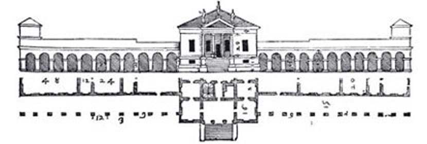
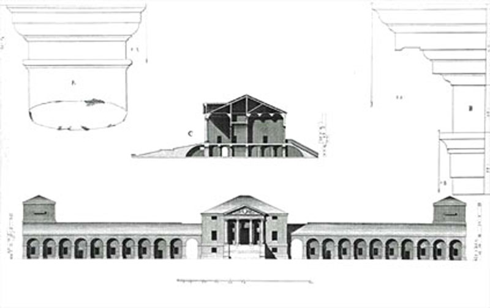

Villa Emo is one of the most accomplished of the Palladian Villas,
showing the benefit of 20 years of Palladio's experience in domestic architecture.
It has been praised for the simple mathematical relationships expressed in its proportions,
both of the elevation and the dimensions of the rooms. In 1570 Palladio published a plan
of the villa in his treatise I Quattro Libri dell'Architettura. Unlike some of the other
plans he included in this work, the one of Villa Emo corresponds nearly exactly to what was
built.The house is framed by two colonnaded wings which originally housed agricultural activities,
for this was a working villa like Villa Badoer and a number of the other designs by Palladio.
Andrea Palladio emphasises the usefulness of the lay-out in his treatise. He points out that
the grain stores and work areas could be reached under cover, which was particularly important.
Also, it was necessary for the Villa Emo's size to correspond to the returns obtained by good management.
The principles that inspired all the desired operation from Leonardo Emo are a clear expression in the project
of the architect: a plant of extreme simplicity, based on fundamental axes parallel, a gaunt and essential language
far from any extra factors to reveal the architectural thought of architect vigour and purity of composition.In
the design of Villa Emo architect manages to establish a perfect connection and harmony between the architectural shapes,
functions to which it is linked, the conformation of the territory.

Inspired by the symmetry of the Roman buildings, Villa Emo seems to represent a geometric spatial structure compendium
of all villas of Palladio, for his compositional and stylistic simplicity that becomes an example of canons of the architect.
Villa Emo prevail simplicity and rigour of plant, underlined by the almost total alignment between
barns and main front, where the portico and pediment fall within the body of the Villa, and reiterated by
the austere towers of colombare.
The main facade is the exemplification of the relationships between the interior spaces:
the central building of the Villa doesn't come off by adding them to the vertical momentum,
the frame disappears at the ramp that connects with harmony central body at ground level and wing,
the Windows of the façade indicate the modulation of heights and the concatenation of internal compartments.
